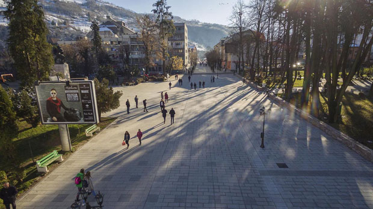
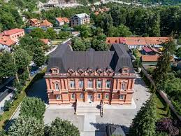
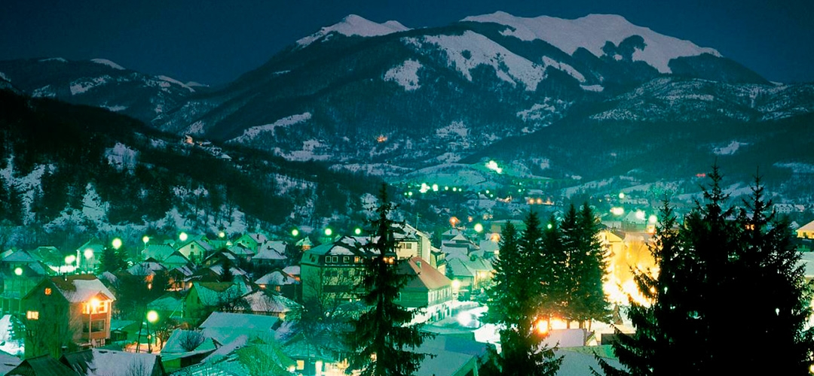
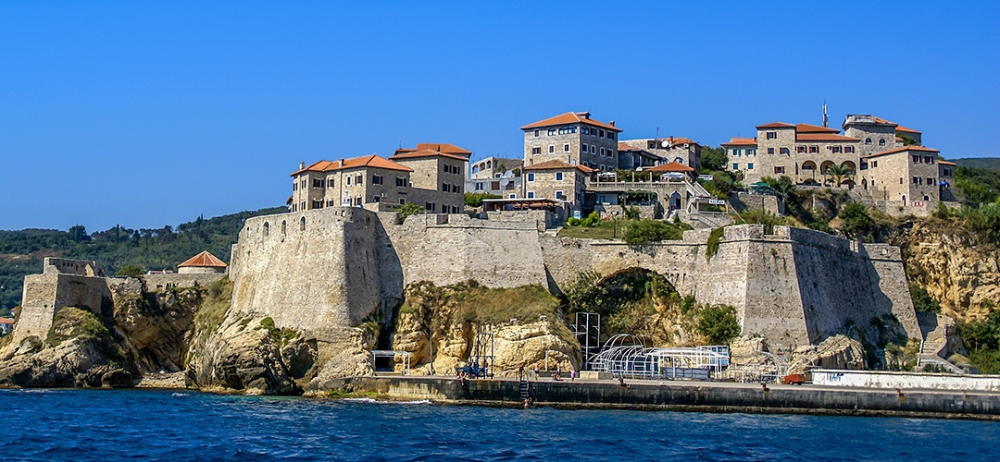

| 1. |
Andrijevica
|
Planinsko-dolinska regija |
1073 |
- Spomen park Knjaževac
- Katuni
- Namastir
|
|
| 2. |
Bar
|
Primorska regija |
13 719 |
- Saborni hram Svetog Jovana Vladimira
- Stara maslina
- Tvrđava Stari Bar
|
 |
| 3. |
Berane
|
Planinsko-dolinska regija |
11 776 |
- Jasikovac
- Polimski muzej
- Đurđevi Stupovi
|
|
| 4. |
Bijelo Polje
|
Planinsko-dolinska regija |
15 883 |
- Stari most na Bistrici
- Jusuf džamija
- Zavičajni muzej
|
 |
| 5. |
Budva
|
Primorska regija |
10 918 |
- Citadela
- Gradski bedemi
- Statua balerine
|
|
| 6. |
Cetinje
|
Srednja regija |
15 137 |
- Dvorac kralja Nikole
- Biljarda
- Njegošev mauzolej
|
 |
| 7. |
Danilovgrad
|
Srednja regija |
5 208 |
- Umjetnička kolonija
- Manastir Ostrog
- Vilina pećina
|
 |
| 8. |
Herceg Novi
|
Primorska regija |
12 739 |
- Mamula
- Tvrđava Forte Mare
- Gradski toranj
|
 |
| 9. |
Kolašin
|
Planinsko-dolinska regija |
2 989 |
- Botanička bašta
- Biogradsko jezero
- Kanjon Mrtvica
|
 |
| 10. |
Kotor
|
Primorska regija |
5 341 |
- Gospa od Škrpjela
- Katedrala Svetog Tripuna
- Napoleonovo pozorište
|
|
| 11. |
Mojkovac
|
Planinsko-dolinska regija |
4 120 |
- Vidikovac Bendovac
- Samostan Sv. Jurja
- Kanjon Tare
|
|
| 12. |
Nikšić
|
Srednja regija |
58 212 |
- Trebjesa
- Krupac
- Bedem
|
 |
| 13. |
Plav
|
Planinsko-dolinska regija |
3 615 |
- Plavsko jezero
- Nacionalni park Prokletije
- Džamija Režepagića
|
|
| 14. |
Plužine
|
Planinsko-dolinska regija |
1 494 |
- Pivsko jezero
- Manastir Piva
- Pećina Odmut
|
 |
| 15. |
Pljevlja
|
Planinsko-dolinska regija |
21 377 |
- Manastir Svete Trojice
- Husein Pašina džamija
- Meandri Ćehotine
|
|
| 16. |
Podgorica
|
Srednja regija |
136 473 |
- Saborni Hram Hristovog vaskrsenja
- Most na Ribnici
- Duklja
|
 |
| 17. |
Rožaje
|
Planinsko-dolinska regija |
9 121 |
- Planina Hajla
- Kuća Pepića
- Ganića Kula
|
|
| 18. |
Tivat
|
Primorska regija |
9 467 |
- Luštica bay
- Ostaci Manastira Sv. Aranđela Mihaila
- marina Porto Montenegro
|
|
| 19. |
Ulcinj
|
Primorska regija |
10 828 |
- Velika plaža
- Valdanos
- Ada Bojana
|
 |
| 20. |
Žabljak
|
Planinsko-dolinska regija |
1 937 |
- Crno jezero
- Durmitor
- Bobotov kuk
|
.jfif) |
| 21. |
Šavnik
|
Planinsko-dolinska regija |
570 |
- Vodopad Crnjak
- Kanjon Nevidio
- Manastir Bijela
|
 |